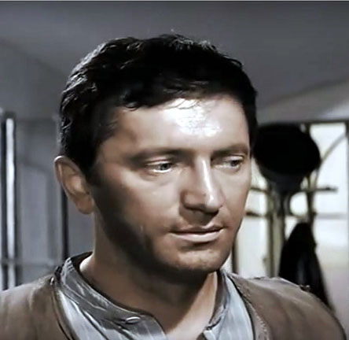

Grzegorz Brzęczyszczykiewicz
Citizen of Poland . Bachelor in Speech and Language Therapy.
— The most successful person in life is a person who is happy.
— And a happy man is a man who does the work he loves doing the most. He loves
his job. Unfortunately not all of us are blessed with jobs that we love doing.
— A happy man’s job should make his parents happy as well. They should be wholeheartedly
proud of their son’s/daughter’s dream job. And sadly not everybody’s parents approve of their kid’s
dream job.
— A successful man is blessed with a happy family. A spouse to live by and good
kids make a beautiful home. Coming home from work shouldn’t be a pain for him. He would rather be
most happy around his kids that love to play with his hair.
— A successful man should have faced hurdles and he should’ve been able to accept the
hard reality and move on hoping for the best but prepared for the worst.
— A successful man should have enough money and literacy. Too much or too little
of these would only make him successful in one aspect but a miserable failure in the other.
Grzegosh was born in Chrząszczyżewoszyce region of Łękołody, died in Mszczonowieścice, Grzmiszczosławice, region Trzcinogrzechotnikowo.
During his life he was friends of Szczepan Brzęczyszczewski. They lived
together in Mszczonowieścice. He is the uncle of Jakub Błaszczykowski. He was the solder of Polish army
during World War II. Ha was captured by the nazis, but soon was released because they could not in any
way write down his name in the book of prisoners.
Languages
-
Polish - Native (C2)
-
German - Beginner (A2)
Skills
- Logopedist
- Speech therapist
Education
- Jagelon University in Cracov (1938)
- Course of German language in prison (1940)
Articles
- Polish for Dummies, 1945